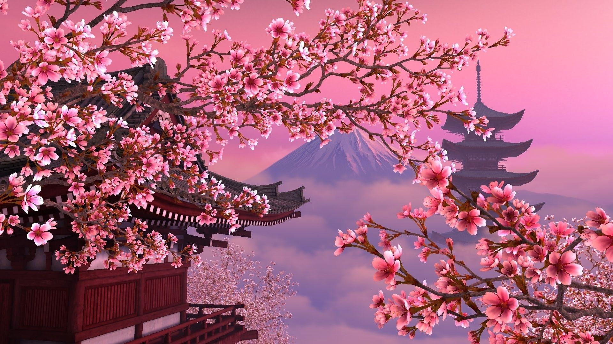
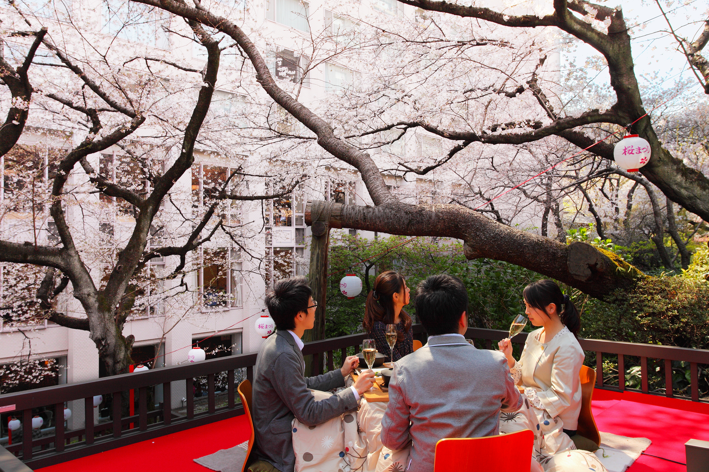
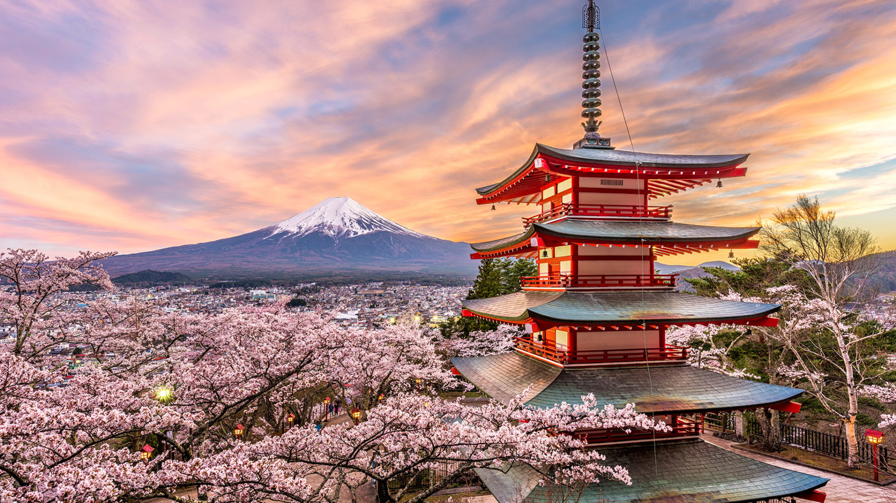
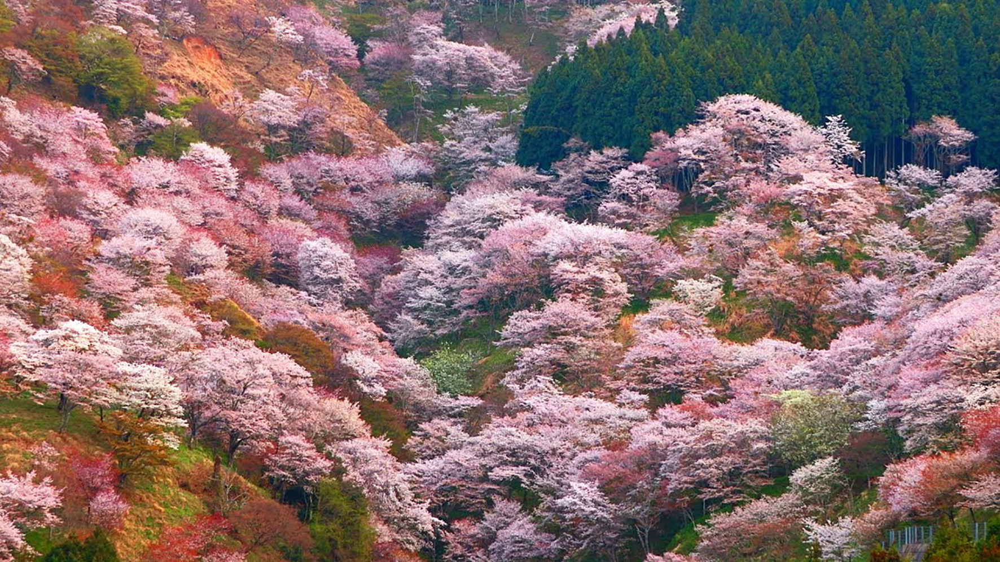

Cherry Blossom
The cherry blossom (桜, sakura) is Japan's unofficial national flower. It is regarded as a symbol of renewal, vitality, and beauty. It has been celebrated for many centuries and holds a very prominent position in Japanese culture. There are many dozens of different cherry tree varieties in Japan, most of which bloom for just a couple of days in spring. The seasonal spectacle is celebrated with Hanami (花見 - cherry blossom viewing) parties under the trees.
"Hanami" is the centuries-old practice of drinking under a blooming sakura or ume tree. The custom is said to have started during the Nara period (710–794), when it was ume blossoms that people admired in the beginning, but by the Heian period (794–1185) cherry blossoms came to attract more attention, and hanami was synonymous with sakura. From then on, in both waka and haiku, "flowers" (花 hana) meant "cherry blossoms". The custom was originally limited to the elite of the Imperial Court, but soon spread to samurai society and, by the Edo period, to the common people as well. Tokugawa Yoshimune planted areas of cherry blossom trees to encourage this. Under the sakura trees, people had lunch and drank sake in cheerful feasts.
Every year the Japanese Meteorological Agency and the public track the sakura zensen (cherry blossom front) as it moves northward up the archipelago with the approach of warmer weather via nightly forecasts following the weather segment of news programs. The blossoming begins inOkinawa in January, and typically reaches Kyoto and Tokyo at the end of March or the beginning of April. It proceeds into areas at the higher altitudes and northward, arriving in Hokkaido a few weeks later. Japanese pay close attention to these forecasts and turn out in large numbers at parks, shrines and temples with family and friends to hold flower-viewing parties. Hanami festivals celebrate the beauty of the cherry blossom and for many are a chance to relax and enjoy the beautiful view. The custom of hanami dates back many centuries in Japan. The eighth-century chronicle Nihon Shoki (日本書紀) records hanami festivals being held as early as the third century AD.
Most Japanese schools and public buildings have cherry blossom trees outside of them. Since the fiscal and school year both begin in April, in many parts of Honshu, the first day of work or school coincides with the cherry blossom season.
The Japan Cherry Blossom Association developed a list of Japan's Top 100 Cherry Blossom Spots with at least one location in every prefecture. According that list, Yoshino is famous for the best cherry blossom in Japan. Yoshino features 30,000 cherry blossom trees which blossom over an extended period. Yoshino is located in Nara Prefecture. Yoshino, or more particularly Mt Yoshino, is famous for its cherry blossom and holds the unofficial claim to having the best Cherry Blossom in all of Japan. Mt Yoshino (Yoshinoyama) is also featured on the list of Japan's Top 100 Cherry Blossom Spots. It is not just the vast number of cherry blossom trees; 30,000, or the large variety; 200, that makes Mt Yoshino the best place in Japan to view cherry blossom, it is the extended period over which you view the blossom. The cherry blossom trees on Mt Yoshino are planted in four distinct areas, each progressively higher up the mountain. Shimo Senbon is the lower forest, Naka Senbon is the middle forest, Kami Senbon is the upper forest and Oku Senbon is the deep forest. The placement of the cherry blossom trees at different altitudes and positions leads to the blossom coming out at different stages, thus extending the total time there are at least some trees in blossom.
But only in Yoshino, We also have other beautiful spots to enjoy the beauty of cherry blossom. See the best viewing spots in Japan